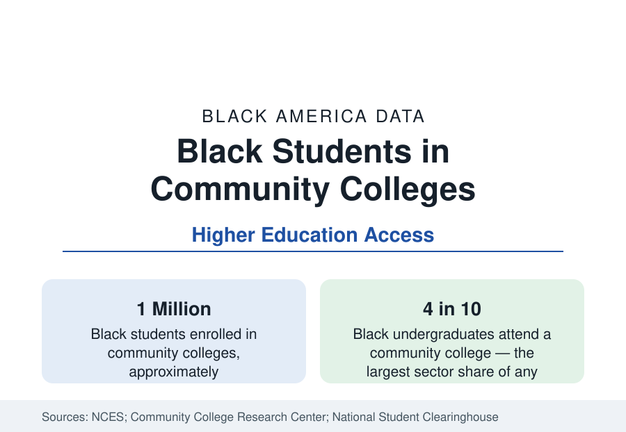

Black Education
Black Students in Community Colleges: The Open Door and Its Bottleneck
About a million Black students attend community colleges — the largest single sector of Black higher education — where the transfer bottleneck decides their bachelor's outcomes.

Roughly a million Black students are enrolled in America's community colleges at any time — about four in ten Black undergraduates, a higher sector share than for any other group — making the two-year college the largest single sector of Black higher education. The sector's open door is its founding promise and its defining data point: anyone may enroll. Its bottleneck is equally defined: of students who start at a community college intending a bachelor's degree, only a minority transfer and complete one, and Black students' rates run below the sector's averages. This article reports the enrollment, transfer, and completion data.
Who Enrolls and Why
The community college population is the higher-education system's most working-class: older on average than four-year students, majority part-time, employed at high rates — often full-time — while enrolled, and drawn from the lower half of the income distribution. Black community college students fit and extend the profile: they are more likely to be first-generation, more likely to be supporting families, and more likely to cite cost and proximity as the deciding factors in the survey data. The sector's price is the mechanism — average tuition a fraction of the public four-year figure, commutable distance from home — and its course schedule, built around working students, is the accommodation. Workforce certificates and applied associate degrees in health care, skilled trades, and public safety form the terminal-credential track alongside the transfer track, and the earnings data for health-care certificates in particular show solid returns.
The Transfer Bottleneck
The tracking studies — following entering cohorts for six to eight years through the National Student Clearinghouse's near-complete enrollment records — supply the sector's hard numbers. Of students who begin at a community college, roughly a third transfer to a four-year institution within six years in the national cohorts; of those who transfer, a majority complete a bachelor's; but the compounded rate — start at a community college, finish with a bachelor's — lands in the range of one in six starters overall, and lower, in the low teens by several cohort studies, for Black starters. The leak points are documented in sequence: developmental (remedial) course sequences that consume semesters without credit, credit loss at transfer (the federal accountability study found transfer students losing on average more than a full semester of credits), part-time enrollment's slow pace against life interruptions, and advising scarcity — counselor ratios in the sector run to many hundreds of students per advisor.
Where the Pipeline Works
Against the averages stand the structured exceptions, which is why the sector's reform literature is optimistic in a specific way. Guided-pathways reforms — mapped programs, default schedules, intensive advising — post completion gains in the institutional data where fully implemented. Guaranteed-transfer articulation agreements between state systems move the credit-loss figure materially. Dual-enrollment programs, in which high school students (Black participation has grown fastest from a low base) bank college credit early, show strong downstream completion in the tracking data. And a set of community colleges — including several majority-Black institutions — post transfer-and-completion rates for Black students at multiples of the sector norm, the existence proof the reform models cite: the bottleneck is structural, not a property of the students.
The HBCU Connection
A distinctive share of the Black community college sector is historically Black by charter: roughly fifty two-year HBCUs and predominantly Black community colleges — from Bishop State and Lawson State in Alabama to Baltimore City Community College and the City Colleges of Chicago's Malcolm X and Olive-Harvey — carry a large fraction of Black two-year enrollment in their states, with transfer agreements into the four-year HBCU systems forming a designed pipeline. Their data track the sector's pattern with the HBCU signature: low resources per student, high shares of Pell recipients, and completion performance that exceeds what their funding predicts in the value-added analyses.
Reading the Community College Data
Community colleges are where Black higher education's access promise and its completion problem meet in their purest form: a million students through an open door, a bachelor's for roughly one in six of the transfer-intending starters, and a set of documented, fixable mechanisms — remediation design, credit transfer, advising ratios — standing between the two numbers. For the education section's accounting, this sector is the largest single lever: small percentage gains in its completion rates produce more Black bachelor's degrees than large gains anywhere else in the system.
More in Black Education
Black Educational Attainment: High School Parity, the College Gap
About 89 percent of Black adults hold a high school diploma and one in four holds a bachelor's degree or higher — the attainment ladder, the college completion gap, and the generational trend.
Historically Black Colleges and Universities: Enrollment and Degrees
More than 100 HBCUs enroll roughly 290,000 students and award about one in six Black bachelor's degrees — an outsized share from a small sector. The federal education data.
Black College Enrollment: 2.4 Million Students
About 2.4 million Black students are enrolled in American colleges — nearly two-thirds of them women. The NCES enrollment data by sector, level, and trend.
Source: National Center for Education Statistics; Community College Research Center; National Student Clearinghouse Research Center.